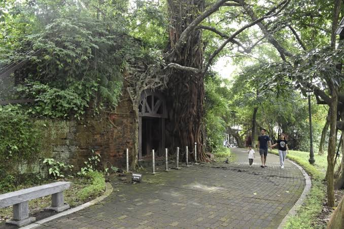
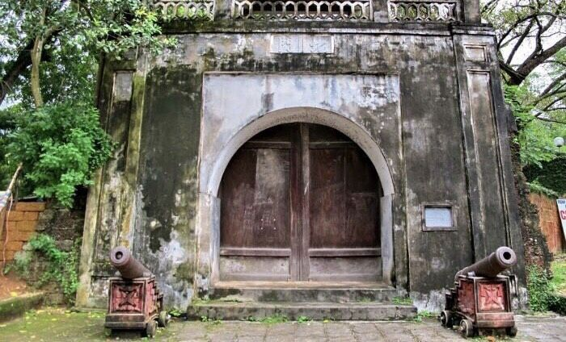
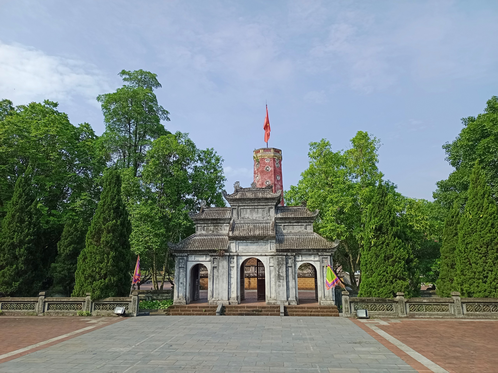
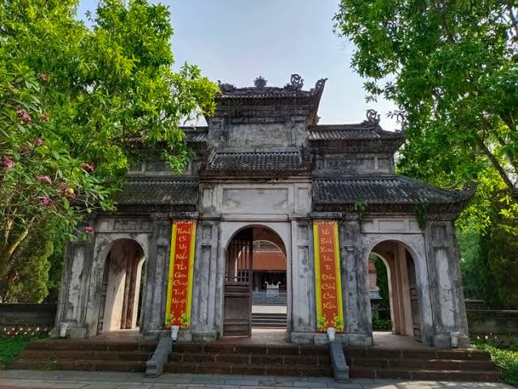
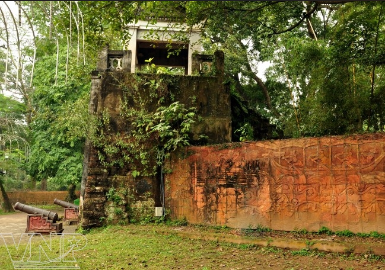
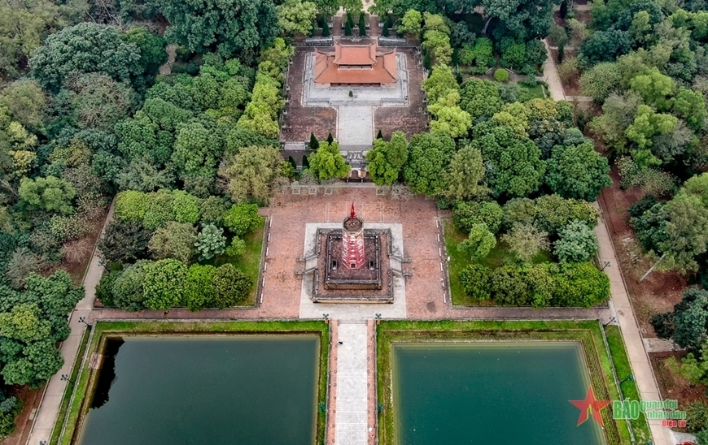
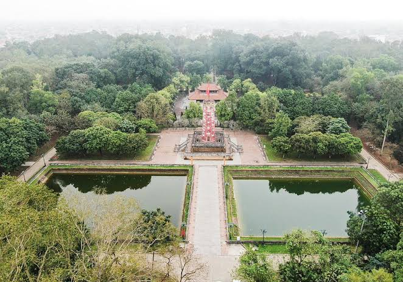

THƯ VIỆN HÌNH ẢNH
Khám phá qua từng góc nhìn






Thành cổ Sơn Tây là một công trình kiến trúc quân sự cổ được xây dựng vào năm 1822 dưới triều vua Minh Mạng. Đây là một trong những thành cổ tiêu biểu của Việt Nam, gắn liền với lịch sử phát triển của vùng đất Sơn Tây.
Với vật liệu đá ong đặc trưng của xứ Đoài, thành cổ mang vẻ đẹp trầm mặc, độc đáo và thể hiện tài năng xây dựng của người Việt xưa.
Ngày nay, nơi đây không chỉ là một di tích lịch sử mà còn là điểm đến văn hóa, du lịch hấp dẫn đối với du khách yêu thích khám phá lịch sử dân tộc.
TÌM HIỂU LỊCH SỬ →Năm xây dựng
Cổng thành chính
Năm lịch sử
Vật liệu đặc trưng
Những dấu mốc gắn liền với Thành cổ Sơn Tây.
• Vào năm Minh Mạng thứ 3, Thành cổ Sơn Tây chính thức được khởi công xây dựng trên vùng đất hai xã Thuần Nghệ và Mai Trai. Đây là tòa thành duy nhất tại Việt Nam được xây hoàn toàn bằng đá ong theo kiến trúc Vauban kiên cố, trở thành trung tâm quân sự và hành chính trọng yếu bảo vệ cửa ngõ phía Tây kinh thành Thăng Long.
Trong suốt thế kỷ XIX, thành giữ vai trò là "lũy thép" vững chắc trấn giữ cả một vùng rộng lớn của xứ Đoài xưa. Không chỉ quản lý về mặt hành chính, nơi đây còn là căn cứ quân sự chiến lược với hệ thống hào sâu, tường cao, Kỳ đài uy nghiêm cùng lực lượng binh sĩ tinh nhuệ bảo vệ vùng biên viễn phía Tây Bắc.
Thành cổ gắn liền với những trang sử hào hùng trong cuộc kháng chiến chống thực dân Pháp. Vào thập kỷ 1870–1880, dưới sự chỉ huy của danh tướng Hoàng Kế Viêm và quân Cờ Đen, quân dân ta đã chiến đấu ngoan cường bảo vệ thành. Đến tháng 12/1946, nơi đây tiếp tục ghi dấu ấn khi trở thành địa điểm họp bàn quan trọng của Chính phủ trong những ngày đầu toàn quốc kháng chiến.
• Trải qua hơn hai thế kỷ thăng trầm và được xếp hạng Di tích Lịch sử Kiến trúc quốc gia từ năm 1994, Thành cổ Sơn Tây vẫn giữ nguyên vẻ đẹp cổ kính, rêu phong dưới những tán cổ thụ hàng trăm năm tuổi. Ngày nay, thành cổ trở thành điểm đến tham quan hấp dẫn, không gian sinh hoạt văn hóa cộng đồng, nghiên cứu lịch sử và giáo dục truyền thống yêu nước cho các thế hệ.
Độc đáo trong từng đường nét, bền bỉ cùng thời gian.

Bốn cổng thành lớn (Tiền, Hậu, Tả, Hữu) được bố trí cân xứng theo bốn hướng Nam, Bắc, Đông, Tây, tạo nên tổng thể hình vuông vức theo lối kiến trúc Vauban chuẩn mực. Mỗi cổng đều xây bằng gạch vồ cổ kính với vọng lâu uy nghiêm phía trên, riêng hai cổng Tiền và Hậu có hệ thống cầu gạch bắc qua hào nước làm lối ra vào chính

Là tòa thành duy nhất tại Việt Nam được xây hoàn toàn bằng đá ong – loại vật liệu tự nhiên đặc trưng mang đậm dấu ấn địa chất và văn hóa vùng đất xứ Đoài. Những khối đá ong xù xì màu nâu sẫm có đặc tính càng phơi nắng mưa càng rắn chắc, tạo nên bức tường thành cao 5m, chu vi hơn 1.300m sừng sững qua hơn hai thế kỷ.

Bao bọc quanh chân thành là hệ thống hào nước sâu 3m, rộng tới 20m đóng vai trò như một vành đai phòng thủ lợi hại cho công trình quân sự xưa. Bên trong khuôn viên rộng 16 ha là sự kết hợp hài hòa giữa các công trình trọng yếu như Kỳ đài cao 18m, điện Kính Thiên cùng bóng mát của những rặng cổ thụ hàng trăm năm tuổi
Trả lời đúng câu hỏi để mở từng ô hình ảnh!


Đến với Thành cổ Sơn Tây để cảm nhận vẻ đẹp cổ kính, tìm hiểu những câu chuyện lịch sử và khám phá nét văn hóa đặc sắc của vùng đất xứ Đoài.
Phường Sơn Tây, thành phố Hà Nội, Việt Nam
Dấu ấn lịch sử - kiến trúc quân sự
